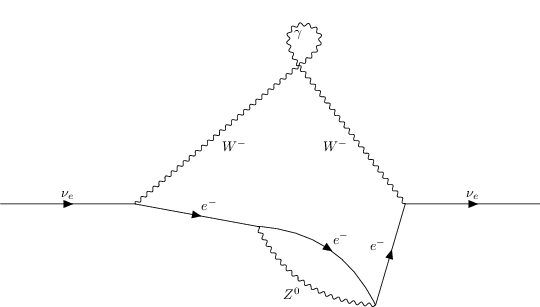

QGraf¶
[1]:
from smpl import io
[2]:
from pyfeyn2.interface import qgraf
import itertools as it
import re
[3]:
style = "tmp.sty"
model ="tmp.model"
dat = "tmp.dat"
output = "output.out"
def multiple_replace(string, rep_dict):
pattern = re.compile("|".join([re.escape(k) for k in sorted(rep_dict,key=len,reverse=True)]), flags=re.DOTALL)
return pattern.sub(lambda x: rep_dict[x.group(0)], string)
raw_model = r"""
* https://porthos.tecnico.ulisboa.pt/CTQFT/node9.html
* Higgs
* [H,H,+]
* leptons
[e,E,-]
* neutrinos
[n,N,-]
* quarks
* [u,U,-]
* [d,D,-]
* photon, W-boson, Z-boson, gluon
[A,A,+]
[WM,WP,+]
[Z,Z,+]
* [g,g,+]
* cubic vertices
[WP,WM,A]
[WP,WM,Z]
* [g,g,g]
* [WP,WM,H]
* [Z,Z,H]
* [H,H,H]
* yukawa
* [E1,e1,H]
* [E2,e2,H]
* [E3,e3,H]
* [U,u,H]
* [D,d,H]
* fermion - gauge boson
[E,e,A]
[E,e,Z]
[N,n,Z]
[N,e,WP]
[E,n,WM]
* [U,u,A]
* [D,d,A]
* [U,u,Z]
* [D,d,Z]
* [U,u,g]
* [D,d,g]
* K-M
* [U,d,WP]
* [D,u,WM]
* quartic vertices
[WP,WM,A,A]
* [WP,WM,Z,Z]
* [WP,WM,A,Z]
* [WP,WM,WP,WM]
* [g,g,g,g]
* [WP,WM,H,H]
* [Z,Z,H,H]
* [H,H,H,H]
"""
raw_model = multiple_replace(raw_model,{"e":"e_minus","E":"e_plus",'n':'nu_e','N':'nu_e_bar',"g":"g",
"H":"H_0", 'Z':'Z_0',
"WP":"W_plus","WM": "W_minus",
"A":"gamma"
})
io.write(model,raw_model,
create_dir=False)
io.write(style,
qgraf.get_style(),
create_dir=False)
io.write(dat,
f"""
output= '{output}' ;
style= '{style}' ;
model = '{model}';
in= nu_e[p1];
out= nu_e[p1];
loops= 3;
loop_momentum= l;
options= notadpole, onshell;
"""
,create_dir=False)
io.remove(output)
[4]:
from pathlib import Path
import subprocess
import shlex
from xsdata.formats.dataclass.parsers import XmlParser
from pyfeyn2.render.latex.feynmp import FeynmpRender
from pyfeyn2.render.latex.tikzfeynman import TikzFeynmanRender
from pyfeyn2.render.pyx.pyxrender import PyxRender
from pyfeyn2.feynmandiagram import FeynML
from pyfeyn2.auto.bend import auto_bend
from pyfeyn2.auto.label import auto_label
from pyfeyn2.auto.position import feynman_adjust_points
subprocess.call(shlex.split(f'qgraf {dat}'))
xml_string = Path(output).read_text()
parser = XmlParser()
fml = parser.from_string(xml_string, FeynML)
def filter_diag(d):
count = 0
ecount = 0
for p in d.propagators:
if p.pdgid == 22:
count +=1
if p.pdgid == 11:
ecount +=1
if count ==1 and ecount >=2:
return True
return False
ccount=0
for d in fml.diagrams:
if filter_diag(d):
ccount +=1
print("single photon diags", ccount)
for d in fml.diagrams:
if filter_diag(d):
ccount +=1
d.legs[0].set_xy(-2,0)
d.legs[1].set_xy(2,0)
d = feynman_adjust_points(d,size=15)
auto_bend(d)
auto_label(d.propagators)
auto_label(d.legs)
#print(d)
t = TikzFeynmanRender(d)
#print(t.get_src())
t.render(show=True)
#break
--------------------------------------------------------------
qgraf-3.5.2
--------------------------------------------------------------
output= 'output.out' ;
style= 'tmp.sty' ;
model = 'tmp.model';
in= nu_e[p1];
out= nu_e[p1];
loops= 3;
loop_momentum= l;
options= notadpole, onshell;
--------------------------------------------------------------
v-degrees #diagrams
- 4^3 .... 0
3^2 4^2 .... 3
3^4 4^1 .... 36
3^6 - .... 365
total = 404 connected diagrams
single photon diags 99

---------------------------------------------------------------------------
KeyboardInterrupt Traceback (most recent call last)
Cell In[4], line 48
46 t = TikzFeynmanRender(d)
47 #print(t.get_src())
---> 48 t.render(show=True)
49 #break
File ~/data/de.neuwirthinformatik.Alexander/Development/git/pyfeyn2/pyfeyn2/render/latex/latex.py:55, in LatexRender.render(self, file, show, resolution, width, height, clean_up)
53 file = "tmp"
54 file = re.sub("\.pdf$", "", file.strip())
---> 55 self.generate_pdf(
56 file,
57 clean_tex=clean_up,
58 compiler="lualatex",
59 compiler_args=["-shell-escape"],
60 )
61 wi = WImage(
62 filename=file + ".pdf", resolution=resolution, width=width, height=height
63 )
64 if delete:
File ~/.cache/pypoetry/virtualenvs/pyfeyn2-CEvJ4jFG-py3.9/lib/python3.9/site-packages/pylatex/document.py:250, in Document.generate_pdf(self, filepath, clean, clean_tex, compiler, compiler_args, silent)
247 command = [compiler] + arguments + compiler_args + main_arguments
249 try:
--> 250 output = subprocess.check_output(command,
251 stderr=subprocess.STDOUT,
252 **check_output_kwargs)
253 except (OSError, IOError) as e:
254 # Use FileNotFoundError when python 2 is dropped
255 os_error = e
File /usr/lib/python3.9/subprocess.py:424, in check_output(timeout, *popenargs, **kwargs)
421 empty = b''
422 kwargs['input'] = empty
--> 424 return run(*popenargs, stdout=PIPE, timeout=timeout, check=True,
425 **kwargs).stdout
File /usr/lib/python3.9/subprocess.py:507, in run(input, capture_output, timeout, check, *popenargs, **kwargs)
505 with Popen(*popenargs, **kwargs) as process:
506 try:
--> 507 stdout, stderr = process.communicate(input, timeout=timeout)
508 except TimeoutExpired as exc:
509 process.kill()
File /usr/lib/python3.9/subprocess.py:1121, in Popen.communicate(self, input, timeout)
1119 self._stdin_write(input)
1120 elif self.stdout:
-> 1121 stdout = self.stdout.read()
1122 self.stdout.close()
1123 elif self.stderr:
KeyboardInterrupt:
[ ]:
print(xml_string)
[ ]: